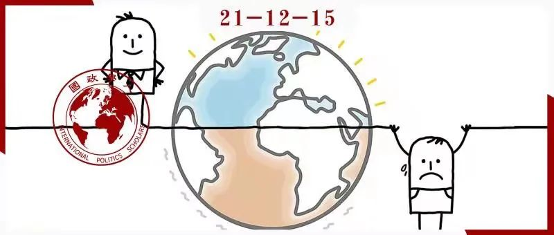

收录于合集 #《国际关系前沿》2021年第12期 22个

作品简介
作者： Klaus Brummer，曾任《外交政策分析》联合主编（2018-2020年）、国际问题研究协会对外政策分析科主任（2015-2016年），并作为客座讲师及教授，曾在杜克大学、爱丁堡大学、斯特拉斯堡大学、赫尔辛基大学和巴塞罗那自治大学任教。他的主要研究兴趣包括:领导力分析，对外政策的国内驱动因素，欧洲一体化，以及非西方背景下的对外政策制定。
编译： 杨璐源（国政学人编译员，山东大学东北亚学院）
来源： Klaus Brummer, Advancing foreign policy analysis by studying leaders from the global South, International Affairs , Volume 97, Issue 2, March 2021, Pages 405–421, https://doi.org/10.1093/ia/iiaa219
归档： 《国际关系前沿》2021年第12期，总第39期。

内容摘要
尽管学界对非西方国家的对外政策越来越感兴趣，对外政策分析（foreign policy analysis）领域却仍然偏向以美国为代表的西方世界。 因此，20年前玛格丽特·赫尔曼（Margaret Hermann）对此提出的批判——对外政策决策模式具有明显的美国特性至今依旧有效。于是，这些分析模型在被运用到美国以外的情境时常常表现不佳，尤其是在非民主、过渡性或欠发达的政体中。
这种批判不仅适用于国内制度对对外政策的总体影响，也适用于作为对外政策分析核心过程和结果驱动因素的领导人角色。 事实上，心理学领域的人格理论主要是由西方学者提出的，其核心思路首先被西方对外政策分析学者大量用于对西方领导人的剖析当中。然而， 许多非西方领导人是在与西方截然不同的情境中作出决策的，因此不能理所当然地认为在以领导人为导向的对外政策分析方法中的“情境敏感性（Context sensitivity）”是永远有效的。 这些方法与概念涵盖的指标，往往在西方情境中有效，而在非西方情境中失效。
在此背景下，通过主要使用情境敏感性的概念，本文将迄今为止未被同时考虑的 对外政策分析中的领导人分析研究链条 结合在一起，从而从经验探究的角度为既有的以领导人为导向的对外政策分析方法提出几条不同的改进建议，使得其能够在概念、指标、操作化以及测量等方面转变至适应非西方国家背景的程度。本文的首要目标是扩大适用于对外政策分析中领导人分析的工具。希望通过列出研究方法促进在非西方情境中的个别领导人分析。这篇文章同时也会促进对南方国家对外政策制定的全面理解。
文章导读
01
政策制定的背景差异
全球范围内的南方国家存在着相当大的差异，例如在规模（人口、领土、经济等）、资源、非殖民化的时间（或独立的持续时间、最初的殖民经历）、政权类型、融入世界经济的程度、外部渗透以及区域一体化方面。因此，一些全球南方国家与北方国家具有极高的相似性，而另外的则与北方国家大相径庭。尽管存在差异，但全球南方国家依然拥有许多共性，使它们与全球北方国家区别开来。反过来讲， 这些差异对全球南方国家如何制定对外政策产生影响，从而对“西方”概念提出质疑。
全球北方国家与南方国家之间最根本的区别在于独立国家地位的水平。 全球南方的许多国家的建设过程仍未完成，其中许多国家依旧是支离破碎的，仅发展了部分国家结构。国家弱点对全球南方国家的对外政策制定有影响，资源和专业知识的缺乏也限制了国家制定和实施对外政策的能力。同时，国家的脆弱也与国家的财富与权威及合法性的缺失相关，而国家的分裂和脆弱归根结底同其政权安全和国家生存紧密相关。 由于缺乏巩固的国家地位，全球许多南方的国家不仅面临来自外部行为者的挑战，也面临着来自内部的挑战。 实际上，在还未巩固的国家中，社会代表的也许不是国家实力的源泉，而是对它的挑战。
正如对跨国身份和区域化冲突的承认所表明的那样，全球南方国家的独立国家地位及其自治和主权不仅受到国内因素的损害或挑战，而且还受到区域或全球因素的损害或挑战，且程度高于北方国家受到的情况。 在这种情况下，最相关的因素似乎是依赖关系和外部渗透。 前者指的是全球南方国家的经济从属关系，这些国家在不同程度上位于“经济边缘”（尽管程度不同），因此依赖于“国际资本主义核心”。即使有关文献表明边缘国家不会自动跟随核心国家的领导，但核心国家却能够对边缘国家施加约束，从而限制后者的自治和主权。此外，全球大国还在政治和军事方面侵犯或“渗透”了全球南方国家和地区。在此过程中，国家间建立了庇护关系（patron- client relations），旨在进一步实现他们的利益诉求。
总的来说， 全球南方国家的许多对外政策制定者有着与北方国家截然不同的决策情境或背景。 所以不能想当然地认为西方学者首先开发的，用于分析西方决策者的以领导人为导向的对外政策分析方法，可以自动扩展到这些情境中。因此，探索以领导人为导向的对外政策分析方法的情境敏感性，使之适用于有关概念和指标是必要的。从概念层面到指标操作层面，本文共提出了三种改善途径，以促进这一国际关系子领域实现超越西方世界的多样化。
首先，对外政策分析中常使用的几种分析领导者的方法，例如前景理论（prospect theory），在分析全球南方的领导者中几乎没有应用。因此 需要在关于全球南方领导人的研究中应用这些方法，以确定这些方法的范围和解释效力是否也适用于非西方情境。
其次， 对于全球南方国家的研究有助于调整对外政策分析方法中包含的概念，从而使它们对情境更加具有敏感性。 这一点将通过政策制定的多元启发理论（poliheuristic theory）说明。多元启发理论假定了任何政治领导人在做出决定时都会考虑相同的国内政治因素。而研究来自全球南方国家的案例，则不同于多元启发理论，可以更好地理解在更特别且多样的决策情境下“不可接受的国内政治成本（unacceptable domestic political costs）”的真正含义。
第三， 分析非西方领导人可以在方法论上推进以领导人为导向的对外政策分析研究。 过去两种最重要的自动化编码方案的出现——领导人特质分析（leadership trait analysis）和操作码分析（operational code analysis），由于要求用英语表达作为分析来源，进一步加强了美国或至少英语国家在该领域的偏见。这可以通过为除英语以外的语言开发编码方案的方式来解决。这样既可以考虑到各个语言的特殊性，同时又使得不同语言之间的分析测量拥有相等效力。
02
确定分析结构的情境敏感性
在当下，正如本节以类比解释框架（Analogical explanation framework）和前景理论所体现的一样，将以研究领导者为核心的对外政策分析方法应用于全球南方领导者的情况少之又少。 因此，将这些方法应用于非西方的领导人，研究其各自认知结构中所包含的“系统化概念”是否具有特定的语境，在理论层面上可以帮助对外政策分析更加完善。 这种在概念层面的集中可以更好地有助于理解分析范围，从而明晰这些认知结构的解释力，最终理解非西方情境中对外政策的可能驱动因素。
从心理学的角度来看，前景理论试图解决领导者在有风险的条件下的决策问题。与本文讨论的其他领导方法相比，前景理论并不关注个人特质。相反，它聚焦于领导者运作的决策情境，以推断他们参与进风险接受行为的可能性。该理论主张的是，相对于一个参考点，决策者要么处于相对收益区域，要么处于相对损失区域。并根据此形成不同的决策结果。前景理论极少被用于解释全球南方领导人的对外政策行为。
类比解释框架，比前景理论更不常用于非西方案例。该框架侧重于领导者的认知情况，探索决策者如何利用过去的事件来应对目前的情况。该框架通过“六个诊断任务（six diagnostic tasks）”，帮助领导者进行决策。然而，由于考虑到人们在问题处理过程中类比的倾向，以及在对当下对外政策讨论时参考过去的频率，我们非常意外地发现极少有学者使用类比解释框架。因此，从以经验为基础的角度确定此方法的概念是否适用于南方国家情境就变得几乎不可能了。
简而言之，这些以领导人为导向的方法几乎没有被应用于分析全球南方国家领导者的情况。因此， 对非西方情境的系统经验应用将有助于检验这两种方法中包含的系统化概念是否特定于和局限于西方世界，有助于证实这些方法的范围和解释力是否超出了这一情境。
03
提升关键概念的情境敏感性
除了弄清楚以领导人为导向的对外政策分析方法中所包含的概念是否只特定于西方语境之外，来自全球南方的见解还可以有助于达成更精妙的理解，以使这些概念的情境敏感性操作化。这一观点将主要由多元启发理论来说明。这一理论，代表了最近对于对外政策分析工具的新补充，强调了在政策制定中的政治影响。而在试图解释对外政策决策的“方式”和“原因”时，多元启发理论将认知和理性分析的观点结合在一起，将决策过程分解为两个阶段，并将不同的分析观点与每个阶段关联起来。
第一阶段是拒绝政治领导人无法接受的选项。 在这里，决策过程中认知方面的作用明显。多元启发理论认为，领导者会立即拒绝所有不符合主观定义标准的选项。反过来，这个标准通常与政策选择相关的政治成本有关。多元启发理论认为决策者应用了“非补偿性政治损失规避变量（noncompensatory political loss aversion variable）”，因此决策者将迅速且无需过多审查便放弃任何被认为会导致不可接受的国内政治成本的选择。
决策过程的第二阶段是以理性主义假定为指导的。在这里， 领导者会更彻底地检查剩余的选项 。与第一阶段的主要区别在于这次在一个维度上的低预期效用可以通过其他维度的高预期效果来补偿。决策者的最终目标是在剩余的选项中确定一种与手头面临的政策挑战相关，且在所有维度中拥有最高效用的选项。
多元启发理论的主要缺点之一是作为整个理论创新关键点的非补偿性政治损失规避变量可以在不同的方式下分别运用。事实上，该理论的主要支持者已经列出了多达十几种不同的方案以解释“不可接受的国内政治成本”对个别领导人在实际情况中意味着什么。但它们也引发了一个问题——即不可接受的国内政治成本与某些类型的领导人之间是否也有可能存在更细微的关联。
这就是为什么对于全球南方国家领导人的决策研究重要。多元启发理论已经应用于一些非西方案例，没有一个案例表明该理论的概念在这种情况下是不重要的。 尽管如此，大多数研究依然没有研究全球南方国家的情况，以通过将相关概念具体化的方式促进方法的发展。 因此，与上述讨论的缺乏对非西方领导人经验研究的前景理论和类比解释框架相比,多元启发理论真正的挑战与前景主要在于使它的关键概念——非补偿性政治损失规避变量——能够在对于全球南方国家的研究基础上，拥有对于情境更强的敏感性，能够更加准确地确定非补偿性对于特定的决策制定情境以及决策领导意味着什么。
04
开发基于情境敏感性的分析工具
最后， 研究来自全球南方国家的领导人有望在方法层面推进对外政策分析 。正如本文开头所争论的那样，对外政策分析的学术研究表现出了对西方，尤其是对美国和更广泛的盎格鲁文化圈的偏好。这一现象同样适用于那些试图通过研究领导人的特质性格的方法工具，当情境的不同之处潜在地威胁到测量效力时，这一挑战则会加剧。
大多数以领导人为导向的对外政策分析方法，以及几乎所有试图在“远距离”情况下描述领导者的方法，在确定领导者的特质时，都进行了对于言语行为的研究。由于所有领导者都会运用口头陈述，言语行为作为一种原始材料似乎没有问题。然而矛盾的是， 在以言语行为为基础分析领导人的过程中，情境敏感性面临的挑战在近期分析方法促进自动编码方案进步的过程中变得严重起来 。在本节将通过领导人特质分析法（LTA）和操作码分析法（OCA）说明。
领导人特质分析法涵盖了判断领导人特质的的七个因素。根据这些个人特质的某些表现，可以推断出八种不同的领导风格，而这些风格反过来又与特定的行为期望相关联。LTA已多次被应用于非西方领导人。另一种方法操作码分析，则反映了决策者的政治信仰。这一方法在非西方领导人身上也有多种应用。领导人特质分析法和操作码分析法都经常被应用于非西方案例。
然而，就如何将这些系统化的概念用于经验分析而言，最近在这两种方法的基础上引入用于分析领导者的自动编码方案，使得两种方法在非西方情境下的适用性大大降低。这是因为 自动化编码方案引入了在很多情况下难以克服的“语言障碍” 。使用领导人特质分析法，需要至少50个自发的言语行为，每个至少包含100个单词。虽然操作码分析没有类似的标准，但它通常依赖至少10个言语材料，每个至少包含1500字。而自动编码方案的出现带来的挑战则是，在Profiler Plus软件平台中的LTA和OCA大部分仅仅局限于英语文本。因此,一个领导者是否可以使用上述两种方法分析会最终由是否有足够多的英语原材料决定。从方法进步的角度来看，这再次加深了对英语语言的偏好。
对于英语圈的领导者来说，这些原材料要求通常很容易满足。然而另一方面，对于母语不是英语的领导人来说，原材料的编写可能会成为一个巨大的、有时甚至是无法克服的挑战。 首先，这些领导人用英语发表的原创声明往往很少，而且往往不足以满足任何一种方式的要求。即使他们这样做了，演讲的细微之处很可能会被英语不是第一语言的领导人的表达所掩盖。其次，这些领导人口头声明的官方翻译，每一次都有例外情况，而非惯例。此外,这些翻译的质量也是值得质疑的,有时甚至有故意通过“软化”翻译中的表达来改变原始信息。最后,由于很少有政策分析研究者专门受过翻译训练，关于翻译质量的问题一定会继续加重。
在将来的某个时候，机器翻译可能解决让言语材料转变至英语的挑战。 同时研究人员可以开发出使得领导人特质分析法和操作码分析法能够处理除英语之外语言的编码，以使得在其他语言使用者那里关于领导者的政策分析方法是可用的。 然而，即使是那些已经开发出编码方案的语言，仍有许多工作要做。 比如对于西班牙语，即使操作码分析已有完整的编码方案，但领导人特质分析只有部分编码方案；对于阿拉伯语和土耳其语，即使有完整的操作码分析编码方案，但没有领导人特质分析的编码方案;对于波斯语，领导人特质分析编码方案只涵盖一个特质，而操作码分析则没有方案。更重要的是，在全球南方还有更多的国家，其官方语言，如葡萄牙语、法语、普通话，尚未被任何编码方案覆盖。
在开发编码方案方面，语言和语法的差异表明，仅仅将英语词典和编码规则翻译成其他语言是不够的。相反，编码方案需要认识到各个语言的特性，同时允许不同语言之间的度量是等价的。 更具体地说，创建拥有情境敏感性的编码方案需要深厚的语言学知识。此外，这些方案必须纳入与语言有关的历史和文化因素。同样，它也需要专门的知识来解释某些词语或表达的遗漏，并理解词句或表达的具体内涵等。
05
总结
本文试图抹去在对外政策分析中的“西方偏好”。 这一尝试不仅适用于在该领域分析方法的经验性应用，也适用于方法本身。 然而，许多全球南方国家的对外政策制定者们处于非常不同的政治情境中，因此使得既有的对外政策分析方法不能想当然地被采用。 为了解决这一问题，我们需要发展这些方法中的情境敏感性——即各种方法中的核心概念与指标需包含非西方情境，并反过来促进对外政策分析工具的进步。而为了达到这一目的，全球南方国家不仅仅提供了额外的经验性案例，更代表着对外政策分析方法需要向前进步的真正原因。
本文在探讨过程中，通过对全球南方国家情况的研究，提出了三点能够促进对外政策分析的方法。第一，将全球南方国家的领导人引入进以领导人为导向的对外政策分析中， 有助于确立在此方法中的概念的情境敏感性，并由此确定分析的范围以及解释力 。第二，对于全球南方国家的研究 有助于使对外政策分析方法中的关键概念的操作化进行细微调整，从而使其对于情境更加敏感 。第三，对于全球南方国家领导人的分析 有助于对外政策分析在方法层面进步 。这既包含了促使开发英语以外的编码方案，还包含了促使测量标准能够在多种语言中使用。
译者评述
从国际关系的研究而言，经典的现实主义和自由主义分歧的根本出发点，就建立在对人性差异的不同理解基础上。新现实主义的代表人物沃尔兹就曾在其成名之作《人、国家与战争》中提出，“世界历史的发展离不开创造历史的人”。而国家对外政策，则是国家领导人以国家名义，或单独或集体制定的。因此，研究国际关系和对外政策离不开对人的研究，理解人的行为是分析对外政策的关键要素之一。
随着全球南方国家经济、政治地位的逐步上升，国际政治对外政策分析领域也应对其给予相应程度的关注与研究。本文作者以“情境敏感性”这一概念为中心，从南北背景差异、关键概念、分析方法、分析工具等多个方面详实地列举出当今对外政策分析在全球南方领导人研究方面的缺乏现状，并由此提出一系列可行的改进建议。最终得出结论，认为加强对南方国家领导人的研究有助于确立情境敏感性的概念、提升关键概念的情境敏感性以及促进对外政策分析中的方法进步。
本文研究内容及观点新颖、具有启发性，能够引发读者对于对外政策分析领域的西方偏好与缺乏对全球南方领导人研究现状的思考。作者在研究过程中结合了多种现有对外政策分析领域的方法，逐一分析说明，为观点提出提供了较强说服力。
总的来看，国际政治领域对外政策分析的发展还有很长的路要走，但本文作者已经率先看见了其在当前国际格局下迫切需要完善的地方——提升对于全球南方领导人的研究。带着对这一点的思考，将使得我们在之后涉及有关领域时，对不足之处给予更多关注，并试图继续发掘可行的改进措施，以最终进一步发展对外政策分析。
词汇整理
对外政策分析 foreign policy analysis（FPA）
情境敏感性 context sensitivity
领导人特质分析 leadership trait analysis (LTA)
操作码分析 operational code analysis (OCA)
责编 | 石稚瑄 赵旌宏 施榕
排版 | 何婕 彭雯昕
文章观点不代表本平台观点，本平台评译分享的文章均出于专业学习之用, 不以任何盈利为目的，内容主要呈现对原文的介绍，原文内容请通过各高校购买的数据库自行下载。

国政学人
支持学术公益与知识传播
微信扫一扫赞赏作者 __赞赏
已喜欢，对作者说句悄悄话
取消 __
发送给作者
发送
最多40字，当前共字
上一页 1/3 下一页
长按二维码向我转账
支持学术公益与知识传播
受苹果公司新规定影响，微信 iOS 版的赞赏功能被关闭，可通过二维码转账支持公众号。